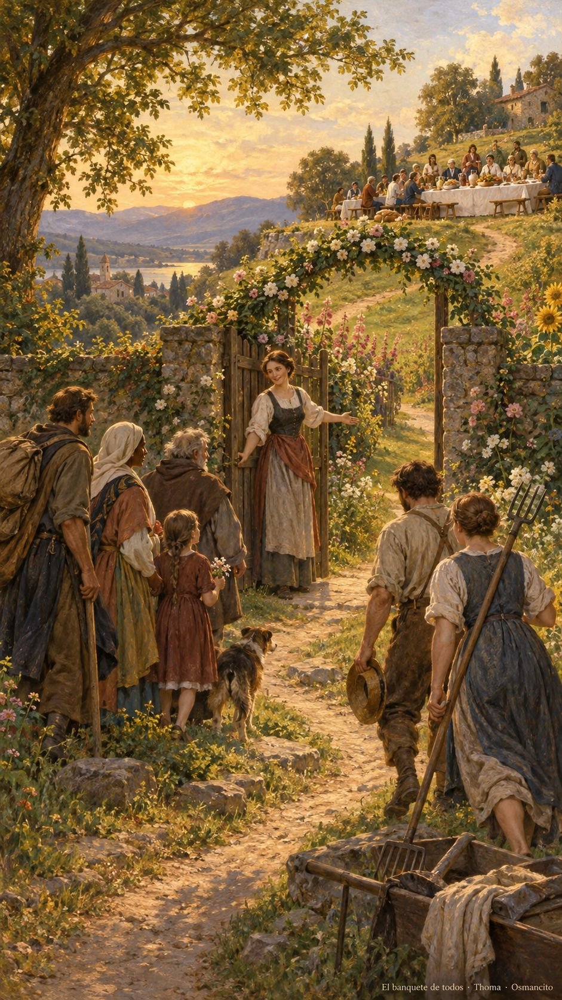
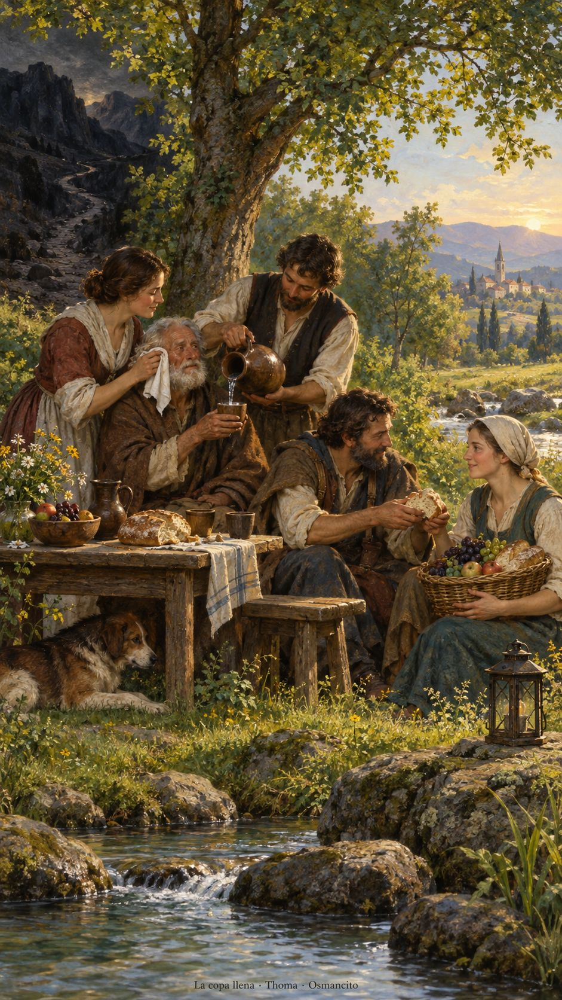

11 de octubre de 2026
¡Buenos días!
El banquete de todos
1
El Señor del universo preparará sobre este monte un festín con platillos suculentos para todos los pueblos; un banquete con vinos exquisitos y manjares sustanciosos.
Isaías 25,6. Fuente
Que aceptemos la invitación de sentarnos juntos, sin preguntar primero quién merece la silla. Que preparemos una mesa donde el cansancio encuentre descanso y las lágrimas una mano cercana. Que aprendamos a compartir cuando sobra y cuando falta, agradeciendo la ayuda que llega. Que ningún camino oscuro nos haga olvidar las aguas tranquilas. Que vistamos de cuidado nuestra presencia y entremos de verdad en la alegría: haciendo sitio, ofreciendo pan y acompañándonos hasta volver juntos.

- La puerta abierta en el cruce de caminos recoge la invitación de Mateo 22. La mesa sobre la colina y los frutos recuerdan el festín para todos los pueblos de Isaías 25.

- El paño junto al rostro recuerda las lágrimas enjugadas de Isaías. El arroyo, la pradera y la copa reciben el Salmo 22; el pan compartido entre escasez y abundancia recoge Filipenses 4.
¡Feliz domingo 11 de octubre!
😊🙋♂